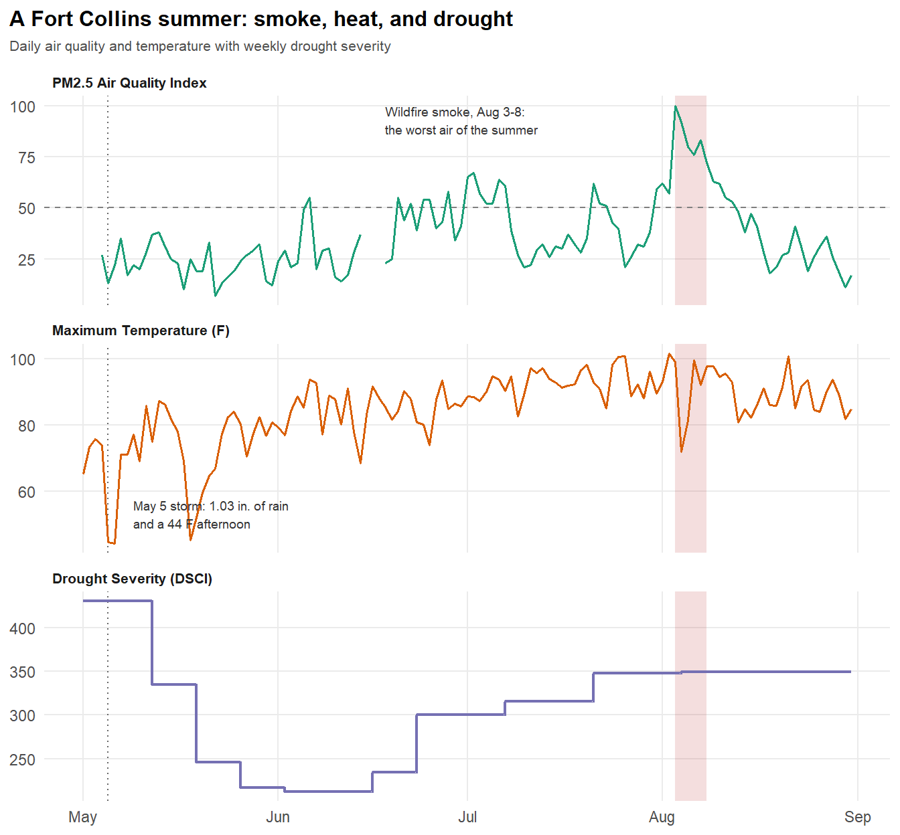
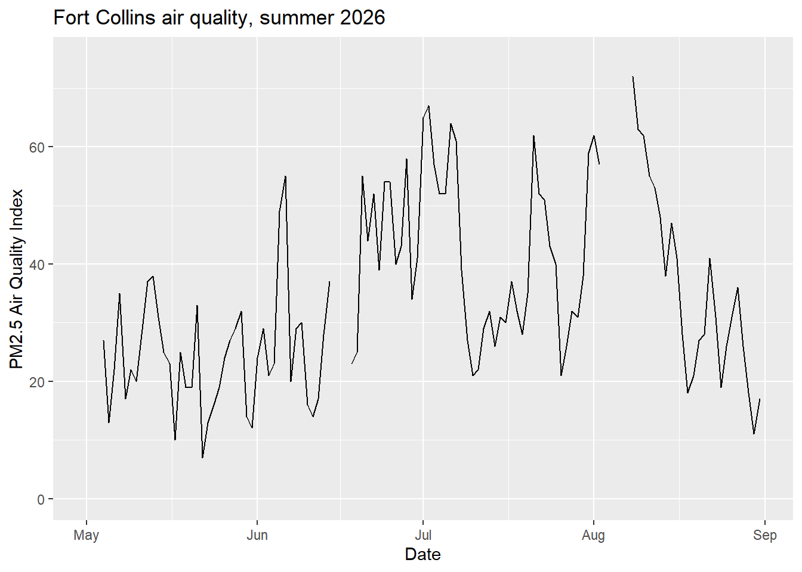
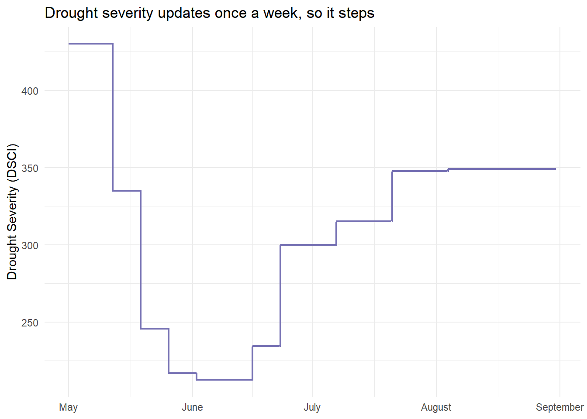
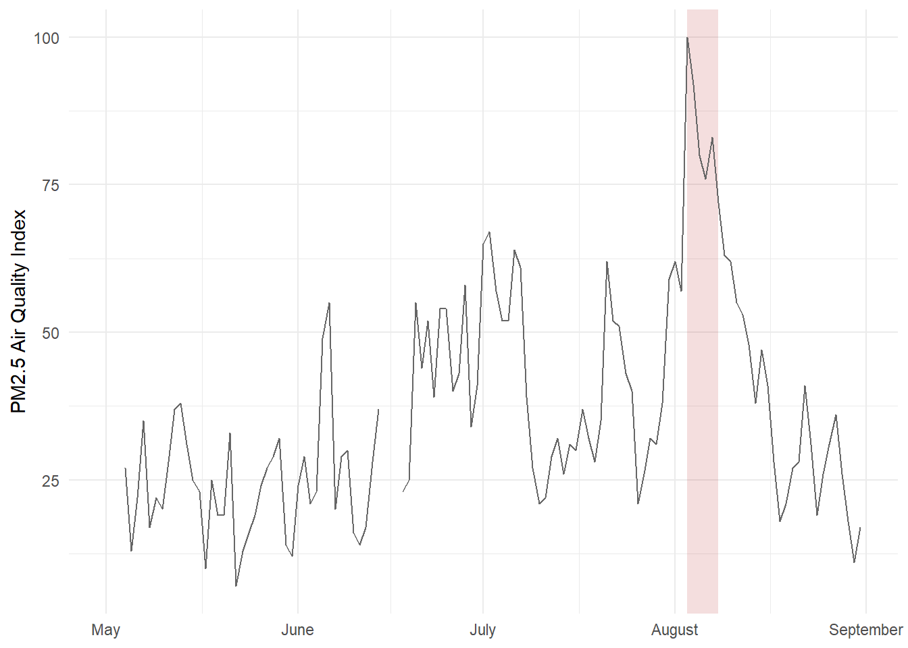
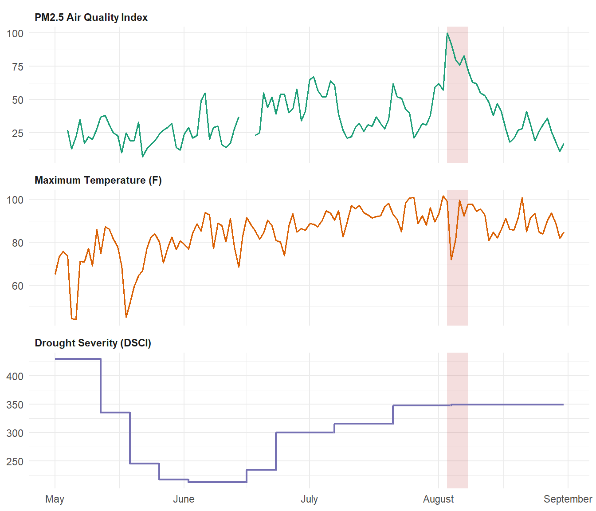
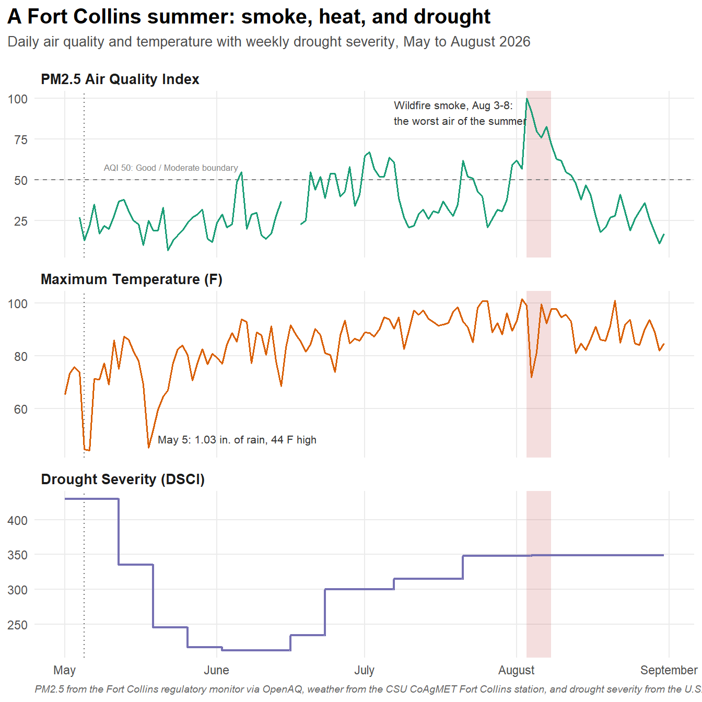

source("setup.R")5 Data Visualization in R
This lesson covers data visualization with ggplot2: how to build a chart, how to customize it, and how to make it ‘publication ready’.
Our focus is on a question that comes up constantly in environmental data: how do things change over time, and how do you show several variables changing together in one figure? Along the way we will hit a problem that has no single right answer, and work through three different solutions to it.
First, set up your session by executing your set up script we created in Lesson 1.
Note: There are some new packages we will use below. For simplicity, you can add them to your setup.R script by tacking them on to the packages <- c() list. The new packages are:
ggthemesRColorBrewerviridisplotly
5.0.1 Data Preparation
For today’s lesson we are going to be working with a summer of daily air quality, weather, and drought data for Fort Collins, CO, covering May through August of 2026. This data can be found on Canvas in the Data Module in .csv format titled fort_collins_aq.csv. Download that file and put it in a data/ folder in your R Project.
After that, read the .csv into your R session using read_csv():
fc_air <- read_csv("data/fort_collins_aq.csv")Inspect fc_air and the structure of the data frame:
glimpse(fc_air)Rows: 123
Columns: 15
$ date <date> 2026-05-01, 2026-05-02, 2026-05-03, 2026-05-04, 2026…
$ month <chr> "May", "May", "May", "May", "May", "May", "May", "May…
$ pm25_aqi <dbl> 27, NA, NA, 27, 13, 22, 35, 17, 22, 20, 28, 37, 38, 3…
$ pm25_conc <dbl> 4.8, NA, NA, 4.8, 2.4, 3.9, 6.3, 3.0, 3.9, 3.6, 5.0, …
$ pm25_category <chr> "Good", NA, NA, "Good", "Good", "Good", "Good", "Good…
$ temp_max_f <dbl> 65.23, 73.26, 75.79, 73.85, 44.52, 44.15, 71.13, 70.9…
$ temp_min_f <dbl> 31.02, 33.28, 41.21, 41.05, 32.62, 31.30, 31.65, 46.0…
$ temp_avg_f <dbl> 50.02, 55.61, 60.58, 55.30, 34.75, 36.85, 52.69, 59.1…
$ precip_in <dbl> 0.00, 0.00, 0.00, 0.04, 1.03, 0.59, 0.01, 0.03, 0.01,…
$ solar_rad <dbl> 474.14, 505.61, 313.37, 181.79, 55.51, 363.09, 377.77…
$ wind_mph <dbl> 1.87, 2.37, 2.21, 2.20, 1.28, 2.52, 2.84, 3.16, 3.71,…
$ gust_mph <dbl> 15.13, 15.04, 17.32, 18.63, 12.93, 12.63, 21.00, 15.2…
$ drought_dsci <dbl> 430.16, 430.16, 430.16, 430.16, 430.16, 430.16, 430.1…
$ drought_category <chr> "D3 Extreme", "D3 Extreme", "D3 Extreme", "D3 Extreme…
$ pct_in_drought <dbl> 100, 100, 100, 100, 100, 100, 100, 100, 100, 100, 100…Notice that read_csv() recognized date as a real date rather than as text. That matters more than it might seem. Because date is a Date column, ggplot2 knows that May 1 and May 2 are one day apart, and it can label an axis in months instead of raw numbers. If date had come in as text, every chart in this lesson would treat the dates as unordered categories.
We are going to follow three variables across the summer:
pm25_aqi— daily Air Quality Index for fine particulate matter (PM2.5), calculated from the day’s average concentration. Higher is worse. Anything at or below 50 is ‘Good’ and 51 to 100 is ‘Moderate’. This summer stayed inside those two categories, peaking at exactly 100 during an early August smoke episode.temp_max_f— daily maximum temperature, in degrees Fahrenheit.drought_dsci— the Drought Severity and Coverage Index for Larimer County, which ranges from 0 (no drought anywhere in the county) to 500 (the entire county in exceptional drought). Larimer was between 213 and 430 all summer, so every point on our charts is a drought day.
Five days in the record have no air quality reading, because the monitor reported too few hours for a trustworthy daily average. We will see exactly what ggplot2 does about that in a moment.
Note: This data for Fort Collins was retrieved entirely in R, pulling from three sources: OpenAQ for air quality, CSU’s own CoAgMET weather network, and the U.S. Drought Monitor. The air quality readings come from a real regulatory monitor here in town, and the code below prints which one it used along with its coordinates. If you are interested in how I did this, expand the code. You will need your own OpenAQ API key to run it (free and instant here); CoAgMET and the Drought Monitor need no key at all.
Show the code used to retrieve this data
library(tidyverse)
library(httr2)
openaq_key <- "PASTE_YOUR_OPENAQ_KEY_HERE"
start_date <- as.Date("2026-05-01")
end_date <- as.Date("2026-08-31")
# Fort Collins, near the CDPHE monitor at 708 S. Mason St.
fc_lat <- 40.5853
fc_lon <- -105.0844
coagmet_station <- "fcl01" # CoAgMET "Fort Collins"
larimer_fips <- "08069"
all_dates <- seq(start_date, end_date, by = "day")
# Download to a temp file first so HTTP errors are readable
fetch_to_temp <- function(url) {
tmp <- tempfile(fileext = ".csv")
resp <- request(url) %>%
req_error(is_error = function(resp) FALSE) %>%
req_perform(path = tmp)
if (resp_status(resp) != 200) stop("Request failed: HTTP ", resp_status(resp))
tmp
}
# --- 1. CoAgMET daily weather -------------------------------------
# `station` and `date` are always returned, so they must NOT be listed
# in fields=. We skip the header and name the columns ourselves.
coagmet_fields <- c("tAvg", "tMax", "tMin", "precip",
"solarRad", "windRun", "gustSpeed")
coagmet_url <- paste0(
"https://coagmet.colostate.edu/data/daily/", coagmet_station, ".csv",
"?from=", start_date, "&to=", end_date,
"&header=no&fields=", paste(coagmet_fields, collapse = ",")
)
weather <- read_csv(fetch_to_temp(coagmet_url),
col_names = c("station", "date", coagmet_fields)) %>%
mutate(across(where(is.numeric), ~ na_if(.x, -999))) %>% # -999 = missing
transmute(
date = mdy(date),
temp_max_f = tMax,
temp_min_f = tMin,
temp_avg_f = tAvg,
precip_in = precip,
solar_rad = solarRad,
wind_mph = windRun / 24, # daily wind run (mi) -> mean speed
gust_mph = gustSpeed
)
# --- 2. U.S. Drought Monitor --------------------------------------
# Percentages are cumulative (D0 means "D0 or worse"), so the Drought
# Severity and Coverage Index is just their sum, from 0 to 500.
usdm_url <- paste0(
"https://usdmdataservices.unl.edu/api/CountyStatistics/",
"GetDroughtSeverityStatisticsByAreaPercent?aoi=", larimer_fips,
"&startdate=", format(start_date - 7, "%m/%d/%Y"),
"&enddate=", format(end_date, "%m/%d/%Y"),
"&statisticsType=1"
)
drought_weekly <- read_csv(fetch_to_temp(usdm_url)) %>%
transmute(
map_date = ymd(MapDate),
drought_dsci = D0 + D1 + D2 + D3 + D4,
drought_category = case_when(
D4 >= 50 ~ "D4 Exceptional",
D3 >= 50 ~ "D3 Extreme",
D2 >= 50 ~ "D2 Severe",
D1 >= 50 ~ "D1 Moderate",
D0 >= 50 ~ "D0 Abnormally Dry",
TRUE ~ "None"
),
pct_in_drought = D1
) %>%
arrange(map_date)
# Drought maps come out weekly, so carry each one forward until the next
drought_daily <- tibble(date = all_dates) %>%
left_join(drought_weekly, by = join_by(closest(date >= map_date))) %>%
select(date, drought_dsci, drought_category, pct_in_drought)
# --- 3. OpenAQ daily PM2.5 ----------------------------------------
# First find the PM2.5 monitors near Fort Collins (parameters_id 2 = PM2.5,
# radius in metres), then pull daily averages.
openaq_get <- function(path, query = list()) {
request("https://api.openaq.org") %>%
req_url_path_append(path) %>%
req_url_query(!!!query) %>%
req_headers("X-API-Key" = openaq_key) %>%
req_perform() %>%
resp_body_json(simplifyVector = FALSE) %>%
pluck("results")
}
locs <- openaq_get("/v3/locations", list(
coordinates = paste(fc_lat, fc_lon, sep = ","),
radius = 25000, parameters_id = 2, limit = 100
))
monitors <- map_dfr(locs, function(l) {
pm <- keep(l$sensors, ~ .x$parameter$name == "pm25")
if (length(pm) == 0) return(tibble())
tibble(location_id = l$id, name = l$name,
lat = l$coordinates$latitude, lon = l$coordinates$longitude,
sensor_id = pm[[1]]$id)
})
# The list mixes reference-grade regulatory monitors (provider "AirNow",
# run by CDPHE) with low-cost community sensors, and a backyard sensor can
# be closer to downtown than the regulatory one. Location 1331 is
# "Ft. Collins - CSU Facilities" at 251 Edison Dr, the CDPHE PM2.5 monitor.
chosen <- filter(monitors, location_id == 1331)
# /days gives daily means built from hourly data. Note that OpenAQ silently
# IGNORES query parameters it does not recognise, so the date filter has to
# be spelled date_from / date_to, and we page through and filter locally
# as a belt-and-braces check.
fetch_days <- function(sensor_id, from, to) {
out <- list(); page <- 1
repeat {
res <- openaq_get(paste0("/v3/sensors/", sensor_id, "/days"), list(
date_from = format(from, "%Y-%m-%d"),
date_to = format(to + 1, "%Y-%m-%d"),
limit = 1000, page = page
))
if (length(res) == 0) break
out <- c(out, res)
if (length(res) < 1000 || page > 15) break
page <- page + 1
}
out
}
days <- fetch_days(chosen$sensor_id, start_date, end_date)
# The US AQI for PM2.5 is defined on the 24-hour average concentration,
# which is what /days returns. Breakpoints are EPA's 2024 revision.
pm25_to_aqi <- function(conc) {
conc <- floor(conc * 10) / 10 # EPA truncates to 1 decimal
bp <- tribble(
~c_lo, ~c_hi, ~i_lo, ~i_hi,
0.0, 9.0, 0, 50,
9.1, 35.4, 51, 100,
35.5, 55.4, 101, 150,
55.5, 125.4, 151, 200,
125.5, 225.4, 201, 300,
225.5, 500.4, 301, 500
)
map_dbl(conc, function(x) {
if (is.na(x) || x < 0) return(NA_real_)
row <- bp %>% filter(x >= c_lo, x <= c_hi) %>% slice(1)
if (nrow(row) == 0) return(500)
round((row$i_hi - row$i_lo) / (row$c_hi - row$c_lo) * (x - row$c_lo) + row$i_lo)
})
}
air <- map_dfr(days, function(d) tibble(
date = as.Date(substr(d$period$datetimeFrom$local, 1, 10)),
pm25_conc = as.numeric(d$value),
# percent of the 24 expected hourly values actually observed
coverage = as.numeric(d$coverage$percentComplete)
)) %>%
filter(date >= start_date, date <= end_date, coverage >= 75) %>%
mutate(
pm25_conc = round(pm25_conc, 1),
pm25_aqi = pm25_to_aqi(pm25_conc),
pm25_category = cut(pm25_aqi,
breaks = c(-Inf, 50, 100, 150, 200, 300, Inf),
labels = c("Good", "Moderate", "Unhealthy for Sensitive Groups",
"Unhealthy", "Very Unhealthy", "Hazardous")) %>% as.character()
) %>%
select(date, pm25_conc, pm25_aqi, pm25_category)
# --- 4. Join it all together --------------------------------------
fort_collins_aq <- tibble(date = all_dates) %>%
left_join(air, by = "date") %>%
left_join(weather, by = "date") %>%
left_join(drought_daily, by = "date") %>%
mutate(month = month(date, label = TRUE, abbr = FALSE)) %>%
relocate(month, .after = date)
write_csv(fort_collins_aq, "data/fort_collins_aq.csv")5.1 Where We Are Headed
In today’s lesson you are going to learn how to go:


5.2 Building a Line Chart with ggplot2
Every ggplot2 chart is built from the same three pieces:
the data
an aesthetic mapping, inside
aes(), saying which columns become which visual properties (x position, y position, color, size)one or more geoms, the actual marks drawn on the page
A line chart is geom_line() with time on the x axis. That is the whole idea:
Note the + between ggplot2 layers, rather than the %>% pipe we use elsewhere in the tidyverse. Every chart in this lesson is built by adding layers with +.
Look closely and you will see the line has gaps in early May and mid June. Those are not plotting errors. Those are the five days with no air quality reading, and geom_line() correctly refuses to draw a line through missing data. A gap is the honest thing to show. If you connected across it, you would be inventing measurements that were never taken.
Adding points on top makes the individual observations visible, and makes those gaps easier to read. Layers draw in the order you add them, so the points land on top of the line:
fc_air %>%
ggplot(aes(x = date, y = pm25_aqi)) +
geom_line(color = "grey60") +
geom_point(size = 1)
Setting color and size outside of aes() applies one fixed value to everything. Later we will put them inside aes() to map them to a variable, which is a different thing entirely.
Daily data is noisy. When you want the trend rather than the day-to-day jitter, geom_smooth() fits a curve through the points. se = FALSE turns off the shaded confidence band, and span controls how wiggly the curve is (smaller is wigglier):
fc_air %>%
ggplot(aes(x = date, y = pm25_aqi)) +
geom_line(color = "grey75") +
geom_smooth(se = FALSE, span = 0.3, color = "black", linewidth = 1)
Now the shape of the summer is obvious in a way it was not before: air quality drifts steadily worse from May into August, with a sharp spike at the start of August.
Note: linewidth is the modern argument for line thickness in ggplot2. You may see older code and tutorials use size for lines instead. That still works but will give you a deprecation warning.
5.3 Titles, Labels and Axes
5.3.1 Titles and limits
add a title with
ggtitle()

Be cautious of setting the axis limits however, as you notice it omits the full dataset which could lead to dangerous misinterpretations of the data. Here ylim(c(0, 75)) has quietly deleted the entire August smoke episode, the single most important thing in this dataset.
You can also put multiple label arguments within labs() like this, which is usually tidier:

labs() also gives you subtitle and caption, which ggtitle() does not. Setting x = NULL removes the axis title entirely, which makes sense here because the labels already say what they are.
5.3.2 Making the date axis readable
For a continuous variable you control axis breaks with scale_x_continuous(). For dates the equivalent is scale_x_date(), and it is much more convenient because you can ask for breaks in calendar units:
date_breaksaccepts things like"1 month","2 weeks","10 days"date_labelsuses date format codes:%Bis the full month name,%babbreviated,%dday of month,%Yyear
fc_air %>%
ggplot(aes(x = date, y = pm25_aqi)) +
geom_line(color = "grey60") +
geom_point(size = 1) +
scale_x_date(date_breaks = "1 month", date_labels = "%B") +
labs(
title = "Fort Collins air quality, summer 2026",
x = NULL,
y = "PM2.5 Air Quality Index"
)
Try changing date_breaks to "2 weeks" and date_labels to "%b %d" to see how much denser the axis gets, and why picking the right break interval matters.
5.4 Chart Components with theme()
All ggplot2 components can be customized within the theme() function. The full list of editable components (there’s a lot!) can be found here. Note that the functions used within theme() depend on the type of components, such as element_text() for text, element_line() for lines, and element_blank() to remove something entirely.
fc_air %>%
ggplot(aes(x = date, y = pm25_aqi)) +
geom_line() +
labs(title = "Fort Collins air quality, summer 2026",
x = NULL, y = "PM2.5 Air Quality Index") +
scale_x_date(date_breaks = "1 month", date_labels = "%B") +
theme(
# edit plot title
plot.title = element_text(size = 16, color = "blue"),
# edit y axis title
axis.title.y = element_text(face = "italic", color = "orange"),
# edit x axis ticks
axis.text.x = element_text(face = "bold", angle = 45, hjust = 1),
# edit grid lines
panel.grid.major = element_line(color = "black"),
# remove the minor grid lines completely
panel.grid.minor = element_blank()
)
While these edits aren’t necessarily pretty, we are just demonstrating how you would edit specific components of your charts. To edit the overall aesthetics of your plots you can change the theme.
5.4.1 Themes
ggplot2 comes with many built in theme options (see the complete list here).
For example, see what theme_minimal() and theme_classic() look like:


You can also import many different themes by installing certain packages. A popular one is ggthemes. A complete list of themes with this package can be seen here
Now explore a few themes, such as theme_wsj, which uses the Wall Street Journal theme, and theme_economist and theme_economist_white to use themes used by the Economist.

Note you may need to click ‘Zoom’ in the Plot window to view the figure better.
Some themes may look messy out of the box, but you can apply any elements from theme() afterwards to clean it up. Order matters here: the overall theme has to come first, or it will wipe out your individual theme() edits.
fc_air %>%
ggplot(aes(x = date, y = pm25_aqi)) +
geom_line() +
labs(title = "Fort Collins air quality, summer 2026",
x = NULL, y = "PM2.5 Air Quality Index") +
ggthemes::theme_economist() +
theme(
plot.title = element_text(size = 12),
axis.title.y = element_text(margin = margin(r = 10))
)
5.5 Three Variables, One Chart
Here is the real question we came for: we have air quality, temperature, and drought severity. Do they move together?
To plot several variables as separate lines, ggplot2 needs them stacked into long format: one row per date per variable, rather than one row per date with three columns. We will learn a lot more about pivot functions later, but here is your first introduction! To turn a wide dataset long, we use: pivot_longer():
fc_long <- fc_air %>%
select(date, pm25_aqi, temp_max_f, drought_dsci) %>%
pivot_longer(
cols = -date, # everything except date
names_to = "variable", # column names become this column
values_to = "value" # the numbers go here
)
head(fc_long)# A tibble: 6 × 3
date variable value
<date> <chr> <dbl>
1 2026-05-01 pm25_aqi 27
2 2026-05-01 temp_max_f 65.2
3 2026-05-01 drought_dsci 430.
4 2026-05-02 pm25_aqi NA
5 2026-05-02 temp_max_f 73.3
6 2026-05-02 drought_dsci 430. Notice the shape change: fc_air had 123 rows and our three columns, fc_long has 369 rows and just date, variable, and value. Now variable is something we can map to color.
5.5.1 The naive attempt
fc_long %>%
ggplot(aes(x = date, y = value, color = variable)) +
geom_line() +
theme_minimal()
This is our first time putting a variable inside aes(): color = variable tells ggplot2 to draw a separate line for each variable and give each one its own color, and to build a legend explaining the mapping.
But the chart is nearly useless, and it is worth being precise about why. Drought severity runs from about 210 to 430. Air quality runs from 7 to 100. When they share a y axis, the axis has to stretch from 7 to 430, which flattens the air quality line into a nearly straight streak along the bottom. All of its structure, including the August spike we just spent a whole section looking at, disappears.
This is one of the most common failures in real-world charts: variables measured on different scales crammed onto one axis. There are three reasonable ways out, and each one trades something away. Before we get to them, let’s fix the colors.
5.6 Color and Legends
To specify a single color, the most common way is to specify the name (e.g., "red") or the Hex code (e.g., "#69b3a2"). That is what we have been doing with color = "grey60" outside of aes().
When color is mapped to a variable inside aes(), you control the whole set of colors with a palette. Some of the most common packages to work with color palettes in R are RColorBrewer and viridis. Viridis is designed to be color-blind friendly, and RColorBrewer has a web application where you can explore your data requirements and preview various palettes.
The function you use depends on whether your variable is discrete (categories, like our three variable names) or continuous (numbers):
| RColorBrewer | viridis | |
|---|---|---|
| discrete | scale_color_brewer() |
scale_color_viridis_d() |
| continuous | scale_color_distiller() |
scale_color_viridis_c() |
Our variable column is discrete, so we want scale_color_brewer() with a qualitative palette. “Dark2” is a good color-blind friendly choice:
fc_long %>%
ggplot(aes(x = date, y = value, color = variable)) +
geom_line() +
scale_color_brewer(palette = "Dark2") +
theme_minimal()
If you were filling an area or a bar rather than coloring a line, you would use scale_fill_brewer() instead. Every scale_color_* function has a scale_fill_* twin.
The legend labels are still the raw column names, and the legend title says “variable”. You can fix both with labs() and scale_color_brewer():
fc_long %>%
ggplot(aes(x = date, y = value, color = variable)) +
geom_line() +
scale_color_brewer(
palette = "Dark2",
name = "Measurement",
labels = c("Drought Severity", "PM2.5 AQI", "Max Temperature")
) +
scale_x_date(date_breaks = "1 month", date_labels = "%B") +
labs(x = NULL, y = "Value") +
theme_minimal() +
theme(legend.position = "bottom")
legend.position accepts "bottom", "top", "left", "right", and "none" to remove the legend entirely. We will use "none" later, once the chart labels each series in a way that makes a legend redundant.
Careful with labels =: it applies them in the order R sorts the categories, which is alphabetical here, not the order you listed the columns. This is a common way to accidentally mislabel a chart. We will fix it properly in a moment using factors, which is the more reliable approach.
5.7 Fix 1: Put Them on a Common Footing
If the problem is that the variables have different ranges, one fix is to remove the ranges entirely. Rescaling each variable to run from 0 to 1 lets you compare the shapes of the three series even though the units are gone.
fc_scaled <- fc_long %>%
group_by(variable) %>%
mutate(scaled = (value - min(value, na.rm = TRUE)) /
(max(value, na.rm = TRUE) - min(value, na.rm = TRUE))) %>%
ungroup() # ggplot doesn't always like grouped data, so we end with ungrouping it
fc_scaled %>%
ggplot(aes(x = date, y = scaled, color = variable)) +
geom_line(linewidth = 0.8) +
scale_x_date(date_breaks = "1 month", date_labels = "%B") +
scale_color_brewer(palette = "Dark2") +
labs(
title = "All three variables, rescaled from 0 to 1",
x = NULL,
y = "Rescaled value (0 = summer minimum, 1 = summer maximum)"
) +
theme_minimal()
Now you can actually see the relationships. Temperature and air quality both climb into midsummer. Drought does something different and more interesting: it falls sharply through May, bottoms out in mid June, then climbs steadily back through July and August.
The group_by(variable) before mutate() is what makes this work. It tells R to calculate the minimum and maximum separately for each variable, rather than across the whole stacked column.
What you gave up is the y axis. It no longer means anything a reader can interpret. “0.7” is not a temperature or an AQI. Use this when the question is genuinely about shape and timing, and say clearly in the axis label what you did.
5.8 Fix 2: A Second Axis
If you have exactly two variables, you can give each its own axis. In ggplot2 a secondary axis has to be a transformation of the primary one, so you rescale the second variable onto the first axis, then define the second axis as the inverse of that transformation:
# how much to stretch PM2.5 so it shares the temperature scale
coef <- max(fc_air$temp_max_f, na.rm = TRUE) / max(fc_air$pm25_aqi, na.rm = TRUE)
fc_air %>%
ggplot(aes(x = date)) +
geom_line(aes(y = temp_max_f), color = "#d95f02", linewidth = 0.7) +
geom_line(aes(y = pm25_aqi * coef), color = "#1b9e77", linewidth = 0.7) +
scale_y_continuous(
name = "Maximum Temperature (F)",
sec.axis = sec_axis(~ . / coef, name = "PM2.5 Air Quality Index")
) +
scale_x_date(date_breaks = "1 month", date_labels = "%B") +
labs(title = "Temperature and air quality on two axes", x = NULL) +
theme_minimal() +
theme(
axis.title.y.left = element_text(color = "#d95f02", face = "bold"),
axis.title.y.right = element_text(color = "#1b9e77", face = "bold")
)
Coloring each axis title to match its line is essential here. Without it the reader has no way to know which line belongs to which axis.
A word of caution: dual axis charts are controversial, and for good reason. You choose coef, and by choosing it differently you can make two unrelated series appear to move together or apart. Try setting coef <- coef * 2 and re-running the chunk to see how much the apparent relationship changes without a single data value changing. Use dual axes sparingly, and never to argue that two things are correlated.
5.9 Fix 3: Facets
The third option is to stop forcing the variables to share space at all. Facets split one plot into a grid of panels sharing the same x axis, which for time series data is exactly what we want: the same summer, three times, stacked.
facet_wrap() takes a variable to split on, written with a ~ in front of it:
fc_long %>%
ggplot(aes(x = date, y = value, color = variable)) +
geom_line() +
facet_wrap(~variable, ncol = 1) +
theme_minimal()
Better, but the panels still share a y axis, so we have not solved anything yet. The scales argument fixes that. Setting scales = "free_y" lets each panel choose its own y range:
fc_long %>%
ggplot(aes(x = date, y = value, color = variable)) +
geom_line() +
facet_wrap(~variable, ncol = 1, scales = "free_y") +
theme_minimal()
Now every series gets the full height of its panel, the x axis is shared so dates line up vertically, and no units have been thrown away. This is usually the right default.
facet_wrap() has a sibling, facet_grid(), which lays panels out by two variables at once (facet_grid(rows ~ cols)). For one grouping variable, facet_wrap() with ncol or nrow is what you want.
5.9.1 Better panel labels
The strip labels still say pm25_aqi and drought_dsci, which is not what you would put in front of a reader. The cleanest fix is to turn variable into a factor with proper labels. This does two jobs at once: it renames the panels, and because factors have an order, it controls which panel comes first. This is also the reliable way to fix the legend label problem we ran into earlier.
[1] "PM2.5 Air Quality Index" "Maximum Temperature (F)"
[3] "Drought Severity (DSCI)"Panels now appear in the order we listed the levels, not alphabetically.
fc_long %>%
ggplot(aes(x = date, y = value, color = variable)) +
geom_line(linewidth = 0.7) +
facet_wrap(~variable, ncol = 1, scales = "free_y") +
scale_x_date(date_breaks = "1 month", date_labels = "%B") +
scale_color_brewer(palette = "Dark2") +
labs(x = NULL, y = NULL) +
theme_minimal() +
theme(
strip.text = element_text(face = "bold", hjust = 0),
legend.position = "none" # the panel labels already say which is which
)
Dropping the legend with legend.position = "none" is a deliberate choice. Once each panel is labeled, a legend repeating the same three names is redundant ink.
5.10 Using the Right Geom
Before we annotate, look carefully at the drought panel. geom_line() draws a smooth diagonal between each weekly value, which implies drought severity drifted gradually from one number to the next. It did not. The U.S. Drought Monitor publishes one map per week, and the value holds flat until the next map comes out.
geom_step() draws that honestly, as a flat line that jumps:
fc_air %>%
ggplot(aes(x = date, y = drought_dsci)) +
geom_step(color = "#7570b3", linewidth = 0.8) +
scale_x_date(date_breaks = "1 month", date_labels = "%B") +
labs(
title = "Drought severity updates once a week, so it steps",
x = NULL, y = "Drought Severity (DSCI)"
) +
theme_minimal()
To use a different geom in one panel, give that layer its own data. Any geom can take a data = argument that overrides the plot’s default, which is one of the most useful things to know about ggplot2:
fc_long %>%
ggplot(aes(x = date, y = value, color = variable)) +
# daily variables get a line
geom_line(data = ~ filter(.x, variable != "Drought Severity (DSCI)"),
linewidth = 0.7) +
# the weekly variable gets a step
geom_step(data = ~ filter(.x, variable == "Drought Severity (DSCI)"),
linewidth = 0.8) +
facet_wrap(~variable, ncol = 1, scales = "free_y") +
scale_x_date(date_breaks = "1 month", date_labels = "%B") +
scale_color_brewer(palette = "Dark2") +
labs(x = NULL, y = NULL) +
theme_minimal() +
theme(strip.text = element_text(face = "bold", hjust = 0),
legend.position = "none")
The ~ filter(.x, ...) syntax is shorthand for “take the plot’s data and filter it”, where .x stands in for the dataset.
5.11 Annotation
Annotation is the process of adding text, or ‘notes’, to your charts. With time series data the thing you usually want to call out is not a single point but a period: a heat wave, a storm, a smoke event.
5.11.1 Shading a time window
annotate("rect", ...) draws a rectangle. The trick that makes it work for time series is ymin = -Inf and ymax = Inf, which means “from the bottom of the panel to the top” whatever the panel’s y range happens to be:
fc_air %>%
ggplot(aes(x = date, y = pm25_aqi)) +
# shade first so the line draws on top of it
annotate("rect",
xmin = as.Date("2026-08-03"), xmax = as.Date("2026-08-08"),
ymin = -Inf, ymax = Inf,
alpha = 0.15, fill = "firebrick") +
geom_line(color = "grey40") +
scale_x_date(date_breaks = "1 month", date_labels = "%B") +
labs(x = NULL, y = "PM2.5 Air Quality Index") +
theme_minimal()
Order matters. The annotate() call comes first so the shading sits behind the line. Swap the two and the rectangle will wash out your data.
Here is the clever part. annotate() is not tied to any facet, so a single rectangle is drawn in every panel. One line of code marks the same window across all three variables, and suddenly you can read down through the panels at a fixed moment in time:
fc_long %>%
ggplot(aes(x = date, y = value, color = variable)) +
annotate("rect",
xmin = as.Date("2026-08-03"), xmax = as.Date("2026-08-08"),
ymin = -Inf, ymax = Inf,
alpha = 0.15, fill = "firebrick") +
geom_line(data = ~ filter(.x, variable != "Drought Severity (DSCI)"),
linewidth = 0.7) +
geom_step(data = ~ filter(.x, variable == "Drought Severity (DSCI)"),
linewidth = 0.8) +
facet_wrap(~variable, ncol = 1, scales = "free_y") +
scale_x_date(date_breaks = "1 month", date_labels = "%B") +
scale_color_brewer(palette = "Dark2") +
labs(x = NULL, y = NULL) +
theme_minimal() +
theme(strip.text = element_text(face = "bold", hjust = 0),
legend.position = "none")
Look at what that one rectangle reveals. Inside the shaded window, air quality spikes to the worst readings of the summer, drought is sitting at its highest level since May, and temperature does something strange: it drops by nearly 30 degrees for a day, right in the middle of a stretch of upper 90s. That is the smoke itself blocking sunlight. You would be unlikely to notice that dip in the temperature panel on its own. It only becomes a story because the shading points your eye at the same dates in all three panels at once.
geom_vline() does the same job for a single moment rather than a window, and geom_hline() draws a horizontal reference line:
geom_vline(xintercept = as.Date("2026-05-05"), linetype = "dotted", color = "grey30")5.11.2 Annotating one specific panel
Sometimes a note belongs in only one panel. An AQI of 50 is the boundary between “Good” and “Moderate”, which is meaningful for air quality and meaningless for temperature, so drawing it in all three panels would be nonsense.
annotate() cannot do this, because it has no idea what a facet is. The solution is to build a small data frame that contains the faceting variable, and hand it to a geom. ggplot2 then places that layer only in the matching panel:
# A tibble: 1 × 4
variable yint date label
<fct> <dbl> <date> <chr>
1 PM2.5 Air Quality Index 50 2026-05-09 AQI 50: Good / Moderate boundaryThe critical detail is levels = levels(fc_long$variable). The factor in your annotation data has to have the same levels as the factor in your plot data, or the panels will not match up.
The same technique places text in a chosen panel:
notes <- tibble(
variable = factor(
c("PM2.5 Air Quality Index", "Maximum Temperature (F)"),
levels = levels(fc_long$variable)
),
date = as.Date(c("2026-07-07", "2026-05-20")),
value = c(99, 50),
label = c("Wildfire smoke, Aug 3-8:\nthe worst air of the summer",
"May 5: 1.03 in. of rain, 44 F high")
)
notes# A tibble: 2 × 4
variable date value label
<fct> <date> <dbl> <chr>
1 PM2.5 Air Quality Index 2026-07-07 99 "Wildfire smoke, Aug 3-8:\nthe worst…
2 Maximum Temperature (F) 2026-05-20 50 "May 5: 1.03 in. of rain, 44 F high" Note that with annotations you may need to mess around with the x and y positions to get it just right. Also, the preview you see in the ‘plot’ window may look jumbled and viewing it by clicking ‘Zoom’ can help.
5.12 Finalize and Save
We are almost done with this figure. Below I am putting all of it together and adding a few more elements. Feel free to add your own!
fc_long %>%
ggplot(aes(x = date, y = value, color = variable)) +
# 1. shaded smoke window, drawn in every panel, behind everything
annotate("rect",
xmin = as.Date("2026-08-03"), xmax = as.Date("2026-08-08"),
ymin = -Inf, ymax = Inf,
alpha = 0.15, fill = "firebrick") +
# 2. the May 5 storm, a single moment
geom_vline(xintercept = as.Date("2026-05-05"),
linetype = "dotted", color = "grey40") +
# 3. the Good/Moderate boundary, PM2.5 panel only, with its own label
geom_hline(data = threshold, aes(yintercept = yint),
linetype = "dashed", color = "grey50", inherit.aes = FALSE) +
geom_text(data = threshold, aes(x = date, y = yint + 6, label = label),
size = 2.2, hjust = 0, vjust = 0, color = "grey50",
inherit.aes = FALSE) +
# 4. the data itself, with the right geom for each variable
geom_line(data = ~ filter(.x, variable != "Drought Severity (DSCI)"),
linewidth = 0.7) +
geom_step(data = ~ filter(.x, variable == "Drought Severity (DSCI)"),
linewidth = 0.8) +
# 5. notes in specific panels
geom_text(data = notes, aes(x = date, y = value, label = label),
size = 2.8, hjust = 0, vjust = 1, color = "grey20",
inherit.aes = FALSE) +
facet_wrap(~variable, ncol = 1, scales = "free_y") +
scale_x_date(date_breaks = "1 month", date_labels = "%B") +
scale_color_brewer(palette = "Dark2") +
labs(
title = "A Fort Collins summer: smoke, heat, and drought",
subtitle = "Daily air quality and temperature with weekly drought severity, May to August 2026",
x = NULL,
y = NULL,
caption = "PM2.5 from the Fort Collins regulatory monitor via OpenAQ, weather from the CSU CoAgMET Fort Collins station, and drought severity from the U.S. Drought Monitor"
) +
theme_minimal() +
theme(
plot.title = element_text(face = "bold", size = 15),
plot.subtitle = element_text(size = 10, color = "grey30",
margin = margin(b = 12)),
plot.caption = element_text(face = "italic", size = 7,
color = "grey40", hjust = 0),
plot.title.position = "plot", # sets the title to the left
strip.text = element_text(face = "bold", hjust = 0, size = 10),
panel.grid.minor = element_blank(),
legend.position = "none"
)
Saving with ggsave
You can save your plot in the “Plots” pane by clicking “Export”, or you can also do it programmatically with ggsave(), which also lets you customize the output file a little more. Note that you can give the argument a variable name of a ggplot object, or by default it will save the last plot in the “Plots” pane.
Faceted figures usually need more vertical room than the default, so set height deliberately:
# specify the file path and name, and height/width (if necessary)
ggsave(filename = "images/fort_collins_timeseries.png",
width = 8, height = 7, units = "in", dpi = 300)5.12.0.1 Want to make it interactive?
The plotly package and the ggplotly() function lets you make your charts interactive. It works on faceted charts too, and hovering to read exact values on a specific date is genuinely useful for time series.
We can put our entire ggplot code inside ggplotly() to make it interactive. Note that we removed the annotations, as plotly doesn’t yet support them:
ggplotly(
fc_long %>%
ggplot(aes(x = date, y = value, color = variable)) +
geom_line(linewidth = 0.7) +
facet_wrap(~variable, ncol = 1, scales = "free_y") +
scale_x_date(date_breaks = "1 month", date_labels = "%b") +
scale_color_brewer(palette = "Dark2") +
labs(x = NULL, y = NULL) +
theme_minimal() +
theme(legend.position = "none")
)5.13 The Assignment
This week’s assignment is to use anything you’ve learned today, in previous lessons and additional resources (if you want) to make two plots. One ‘good plot’ and one ‘bad plot’. Essentially you will first make a good plot, and then break all the rules of data viz and ruin it. For the bad plot you must specify two things that are wrong with it (e.g., it is not color-blind friendly, jumbled labels, wrong plot for the job, poor legend or axis descriptions, etc.) Be as ‘poorly’ creative as you want!
You can create these plots with any data (e.g., the fort collins aq/weather data from today, the penguins data past lessons, or new ones!), the good (and bad) visualization just has to be something we have not made in class before.
To submit the assignment, create an R Markdown document that includes reading in of the data, and the code to make the good figure and the bad figure. You will render your assignment to Word or HTML (and make sure both code and plots are shown in the output), and don’t forget to add the two reasons (minimum) your bad figure is ‘bad’. You will then submit this rendered document on Canvas. (20 pts. total)
Note: the class will vote on their favorite bad plot and the winners will receive extra credit! First place will receive 5 points, second place 3 points and third place 1 point of extra credit.
5.13.1 Acknowledgements and Resources
For more on the grammar behind ggplot2 and on faceting, the ggplot2 book by Hadley Wickham is the definitive reference. The R Graph Gallery has a good time series section, and Fundamentals of Data Visualization by Claus Wilke has an excellent chapter on visualizing time series, including a fair discussion of when dual axes are and are not defensible. Air quality data comes from OpenAQ, weather data from CSU’s CoAgMET network, and drought data from the U.S. Drought Monitor.